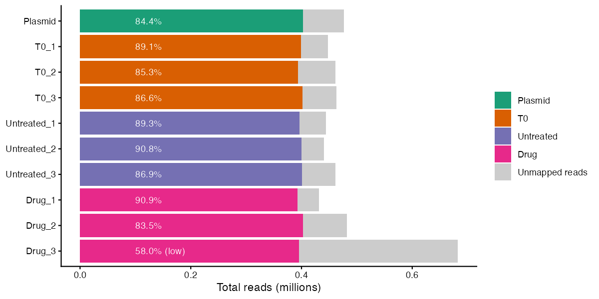
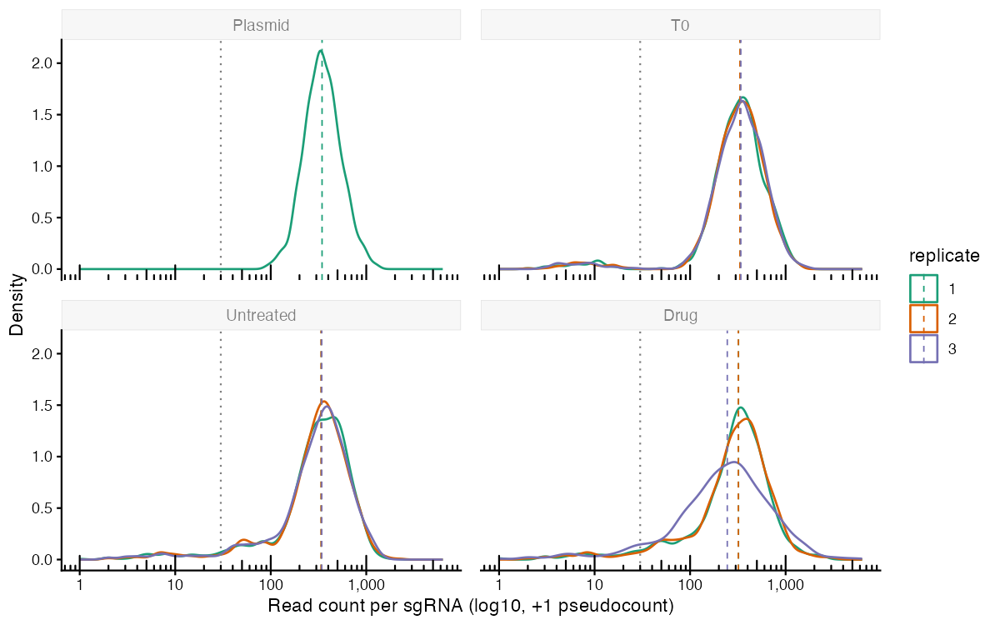
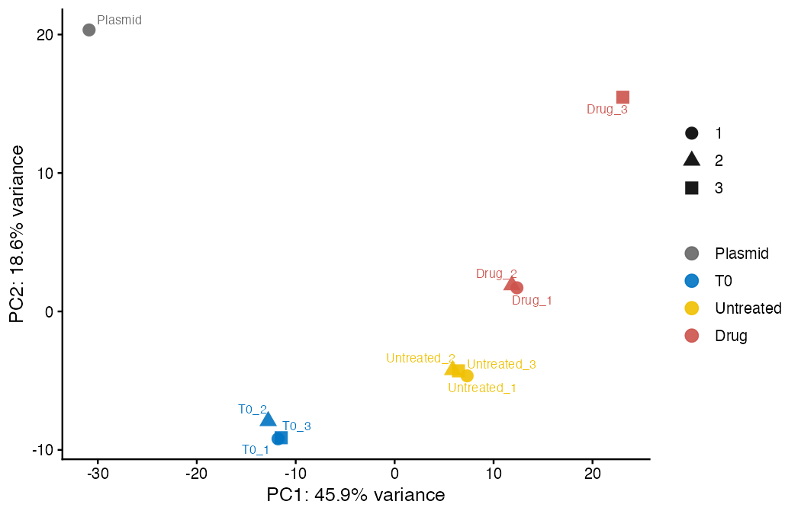
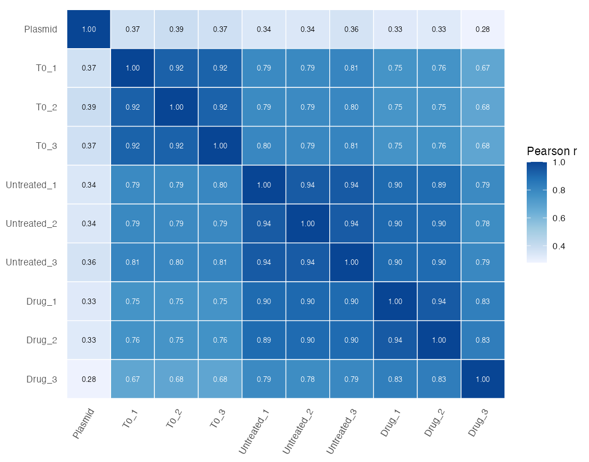

The goal of crisprFlow is to provide wrappers and functions to facilitate the analysis of CRISPR-Cas9 sequencing data - from raw sgRNA sequencing reads to biological insights. The R package includes functions for quality control assessment, guide RNA counting, normalization, statistical analysis, and visualization of results.
Currently, the package requires installation of external tools (non R-based) that are not automatically installed (MAGeCK, guide-counter). A containerized version of the package is under development to ease the installation process.
Installation
You can install the development version of crisprFlow like so:
remotes::install_github("sigven/crisprFlow")Output examples
|
Read mapping QC  |
Count distribution  |
|
Sample PCA  |
Replicate correlation  |